赓续红色血脉 传承特区精神
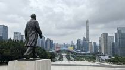
深圳标志性红色地标。登山顶瞻仰邓小平铜像（参观30min），俯瞰深圳中心区全景（现场讲解30min），重温入党誓词微党课（30min）。
展厅参观90min（专题讲解员带队）+ 分组研讨60min。全面展示广东四十年改革开放壮阔历程。
系统参观60min + 专家现场授课60min，梳理深圳百年党史脉络。
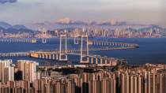
乘车途经+观景平台停留，讲解大湾区超级工程与湾区融合格局。
| 时间 | 活动内容 | 类型 | 时长 |
|---|---|---|---|
| 14:00-15:00 | 深圳北站/宝安机场接站，前往欣正智慧党建中心办理入住 | 接站 | 60min |
| 15:00-15:30 | 入住三星级标准客房（25㎡独立卫浴），休整 | 住宿 | 30min |
| 15:30-16:30 | 开班仪式：领导动员、培训纪律宣讲、授班旗 | 开班 | 60min |
| 16:30-17:00 | 乘车前往莲花山公园 | 交通 | 30min |
| 17:00-18:30 | 莲花山公园现场教学：瞻仰邓小平铜像、俯瞰福田中心区、重温入党誓词 | 参观+学习 | 90min |
| 18:30-19:30 | 基地千人食堂晚餐 | 用餐 | 60min |
| 19:30-21:00 | 晚间专题党课：《特区精神——敢闯敢试、敢为人先》（中央党校同步课程） | 学习 | 90min |
| 21:00 | 返回宿舍休息 | 住宿 | — |
| 时间 | 活动内容 | 类型 | 时长 |
|---|---|---|---|
| 07:00-07:30 | 起床整理 | — | 30min |
| 07:30-08:15 | 基地早餐 | 用餐 | 45min |
| 08:15-08:45 | 乘车前往当代艺术与城市规划馆 | 交通 | 30min |
| 08:45-11:15 | 大潮起珠江展览馆：专题讲解参观90min + 分组研讨60min | 参观+学习 | 150min |
| 11:30-12:30 | 附近餐厅午餐 | 用餐 | 60min |
| 12:45-13:00 | 乘车前往深圳党史馆 | 交通 | 15min |
| 13:00-15:00 | 深圳党史馆：系统参观60min + 专家现场授课60min | 参观+学习 | 120min |
| 15:00-15:30 | 返回基地，茶歇休息 | — | 30min |
| 15:30-17:00 | VR/AR沉浸式党史馆体验：VR重走长征路、AR入党誓词 | 学习 | 90min |
| 18:00-19:00 | 基地晚餐 | 用餐 | 60min |
| 19:30-21:00 | 分组交流：结合本单位实际谈"改革开放再出发"心得体会 | 学习 | 90min |
| 时间 | 活动内容 | 类型 | 时长 |
|---|---|---|---|
| 07:30-08:15 | 早餐、退房（行李集中存放） | 用餐 | 45min |
| 08:30-09:30 | 乘车前往深中大桥观景平台 | 交通 | 60min |
| 09:30-10:30 | 深中大桥现场观摩：讲解超级工程与大湾区融合格局 | 参观 | 60min |
| 10:30-11:30 | 返回基地 | 交通 | 60min |
| 11:30-12:30 | 基地午餐 | 用餐 | 60min |
| 13:00-14:00 | 结业仪式：学员代表发言、颁发培训证书、领导总结 | 结业 | 60min |
| 14:30 | 送站返程 | 送站 | — |
研学主题：敢闯敢试、改革开放再出发
学习重点：特区精神、改革开放历程、粤港澳大湾区建设
预约提醒：大潮起珠江展览馆、深圳党史馆需提前线上预约。
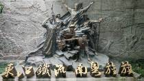
展厅参观90min + 东纵历史专题课60min。华南抗战最重要红色教育基地。
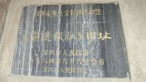
现场讲解30min + 诵读战时报刊片段30min，见证红色舆论战线力量。
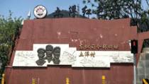
旧址参观45min + 微党课《华南敌后指挥中枢》45min。
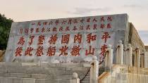
海边纪念公园凭吊45min + 现场教学《顾全大局的革命品格》45min。
| 时间 | 活动内容 | 类型 | 时长 |
|---|---|---|---|
| 14:00-15:00 | 接站前往欣正智慧党建中心，办理入住 | 接站 | 60min |
| 15:00-15:30 | 入住休整 | 住宿 | 30min |
| 15:30-16:30 | 开班仪式、纪律宣讲 | 开班 | 60min |
| 16:30-17:30 | 乘车前往坪山东江纵队纪念馆 | 交通 | 60min |
| 17:30-18:30 | 纪念馆展厅参观（第一部分：东纵成立与发展） | 参观 | 60min |
| 18:30-19:30 | 坪山附近晚餐 | 用餐 | 60min |
| 20:00 | 乘车返回基地休息 | 交通 | 60min |
| 时间 | 活动内容 | 类型 | 时长 |
|---|---|---|---|
| 07:00-07:30 | 起床 | — | 30min |
| 07:30-08:15 | 基地早餐 | 用餐 | 45min |
| 08:30-09:30 | 乘车前往坪山 | 交通 | 60min |
| 09:30-11:30 | 东纵纪念馆续学：专题课《华南敌后抗战史》60min + 重要战役展厅参观60min | 学习+参观 | 120min |
| 12:00-13:00 | 坪山午餐 | 用餐 | 60min |
| 13:30-14:30 | 前进报社旧址现场教学 | 参观+学习 | 60min |
| 15:00-16:30 | 土洋村东纵司令部旧址现场教学（含微党课） | 参观+学习 | 90min |
| 17:30-18:30 | 返回大鹏所城附近晚餐 | 用餐 | 60min |
| 19:30-21:00 | 晚间：观看红色影片《东江纵队》+ 心得分享 | 学习 | 90min |
| 时间 | 活动内容 | 类型 | 时长 |
|---|---|---|---|
| 07:30-08:15 | 早餐、退房 | 用餐 | 45min |
| 08:30-09:15 | 乘车前往沙鱼涌 | 交通 | 45min |
| 09:15-10:45 | 沙鱼涌北撤纪念公园现场教学（凭吊+专题课） | 参观+学习 | 90min |
| 11:00-12:00 | 返回基地 | 交通 | 60min |
| 12:00-13:00 | 基地午餐 | 用餐 | 60min |
| 13:30-14:30 | 结业仪式、颁发证书、学员代表发言 | 结业 | 60min |
| 15:00 | 送站返程 | 送站 | — |
研学主题：华南敌后抗战，革命斗争史
学习重点：东纵精神、艰苦奋斗、华南敌后抗日斗争历史
着装提醒：Day2有旧址步行，请穿舒适运动鞋。
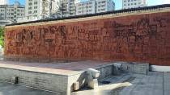
展厅参观90min + 专题课《秘密大营救与统一战线》60min。
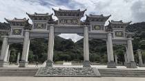
沿当年大营救转移通道徒步90min + 山腰隐蔽点现场微党课45min + 山顶交流45min。
| 时间 | 活动内容 | 类型 | 时长 |
|---|---|---|---|
| 14:00-15:00 | 接站前往欣正智慧党建中心，办理入住 | 接站 | 60min |
| 15:00-15:30 | 入住休整 | 住宿 | 30min |
| 15:30-16:30 | 开班仪式、纪律宣讲 | 开班 | 60min |
| 16:30-18:00 | 基地教室导学课：《香港文化名人大营救历史背景》 | 学习 | 90min |
| 18:00-19:00 | 基地晚餐 | 用餐 | 60min |
| 19:30-21:00 | VR沉浸式体验：重走秘密大营救路线 | 学习 | 90min |
| 时间 | 活动内容 | 类型 | 时长 |
|---|---|---|---|
| 07:00-07:30 | 起床 | — | 30min |
| 07:30-08:15 | 基地早餐 | 用餐 | 45min |
| 08:30-09:00 | 乘车前往白石龙 | 交通 | 30min |
| 09:00-11:30 | 白石龙文化名人大营救纪念馆：参观90min + 专题课60min | 参观+学习 | 150min |
| 12:00-13:00 | 龙华农家菜午餐 | 用餐 | 60min |
| 13:30-16:30 | 阳台山森林公园红色徒步研学（徒步+微党课+山顶交流） | 徒步+学习 | 180min |
| 17:30-18:30 | 返回基地晚餐 | 用餐 | 60min |
| 19:30-21:00 | 分组研讨：新时代统一战线与文化自信 | 学习 | 90min |
| 时间 | 活动内容 | 类型 | 时长 |
|---|---|---|---|
| 07:30-08:15 | 早餐、退房 | 用餐 | 45min |
| 09:00-10:30 | 基地教室：专题课《从秘密大营救看党的统一战线法宝》 | 学习 | 90min |
| 10:30-11:30 | 学员学习成果汇报交流 | 学习 | 60min |
| 12:00-13:00 | 基地午餐 | 用餐 | 60min |
| 13:30-14:30 | 结业仪式、颁发证书 | 结业 | 60min |
| 15:00 | 送站返程 | 送站 | — |
研学主题：统一战线、文化守护
学习重点：统一战线思想、文化自信、红色守护精神
旧址参观60min + 专题课《深圳党组织诞生记》60min + 重温入党誓词30min。
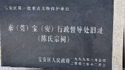
旧址参观45min + 现场教学《早期红色政权建设》45min。
| 时间 | 活动内容 | 类型 | 时长 |
|---|---|---|---|
| 14:00-15:00 | 接站前往欣正智慧党建中心，办理入住 | 接站 | 60min |
| 15:00-15:30 | 入住休整 | 住宿 | 30min |
| 15:30-16:30 | 开班仪式 | 开班 | 60min |
| 16:30-18:00 | 导学课：《深圳党史脉络——从宝安星火到特区辉煌》 | 学习 | 90min |
| 18:00-19:00 | 基地晚餐 | 用餐 | 60min |
| 19:30-21:00 | 观看纪录片《深圳建党记忆》 | 学习 | 90min |
| 时间 | 活动内容 | 类型 | 时长 |
|---|---|---|---|
| 07:00-07:30 | 起床 | — | 30min |
| 07:30-08:15 | 基地早餐 | 用餐 | 45min |
| 08:30-09:30 | 乘车前往宝安 | 交通 | 60min |
| 09:30-12:00 | 中共宝安县一大纪念馆：参观+专题课+重温誓词 | 参观+学习 | 150min |
| 12:00-13:00 | 宝安午餐 | 用餐 | 60min |
| 13:30-15:00 | 东宝行政督导处旧址现场教学 | 参观+学习 | 90min |
| 15:30-16:30 | 参观宝安基层治理示范社区（现场教学延伸） | 参观 | 60min |
| 17:30-18:30 | 返回基地晚餐 | 用餐 | 60min |
| 19:30-21:00 | 分组研讨：不忘初心——从红色起点谈新时代使命 | 学习 | 90min |
| 时间 | 活动内容 | 类型 | 时长 |
|---|---|---|---|
| 07:30-08:15 | 早餐、退房 | 用餐 | 45min |
| 09:00-10:30 | 基地专题课：《早期农民运动与新时代群众工作》 | 学习 | 90min |
| 10:30-11:30 | 学员心得交流、学习笔记展示 | 学习 | 60min |
| 12:00-13:00 | 基地午餐 | 用餐 | 60min |
| 13:30-14:30 | 结业仪式、颁发证书 | 结业 | 60min |
| 15:00 | 送站返程 | 送站 | — |
研学主题：深圳党组织诞生与早期农民运动
学习重点：初心源头、红色根基、早期革命探索
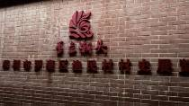
参观"中国改革开放第一村"村史展馆45min + 社区党委书记现场讲45min。
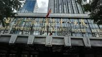
登旋转餐厅俯瞰罗湖45min + "三天一层楼"深圳速度专题课75min。
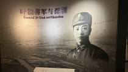
旧址参观30min + 串联"革命—建设"传承脉络微党课30min。
| 时间 | 活动内容 | 类型 | 时长 |
|---|---|---|---|
| 14:00-15:00 | 接站前往欣正智慧党建中心，办理入住 | 接站 | 60min |
| 15:00-15:30 | 入住休整 | 住宿 | 30min |
| 15:30-16:30 | 开班仪式 | 开班 | 60min |
| 16:30-17:00 | 乘车前往渔民村 | 交通 | 30min |
| 17:00-18:30 | 渔民村现场教学：村史展馆+社区书记讲共同富裕 | 参观+学习 | 90min |
| 18:30-19:30 | 罗湖晚餐 | 用餐 | 60min |
| 20:00-21:00 | 返回基地，晚间自习整理笔记 | 学习 | 60min |
| 时间 | 活动内容 | 类型 | 时长 |
|---|---|---|---|
| 07:00-07:30 | 起床 | — | 30min |
| 07:30-08:15 | 基地早餐 | 用餐 | 45min |
| 08:30-09:00 | 乘车前往国贸大厦 | 交通 | 30min |
| 09:00-11:00 | 国贸大厦：登楼俯瞰+深圳速度专题课 | 参观+学习 | 120min |
| 11:15-12:15 | 东江游击队指挥部旧址现场教学 | 参观+学习 | 60min |
| 12:30-13:30 | 罗湖午餐 | 用餐 | 60min |
| 14:00-16:00 | 参观东湖宾馆/迎宾馆（邓小平南巡足迹） | 参观 | 120min |
| 17:30-18:30 | 返回基地晚餐 | 用餐 | 60min |
| 19:30-21:00 | 专题课：《深圳速度与特区实干精神》+ 分组讨论 | 学习 | 90min |
| 时间 | 活动内容 | 类型 | 时长 |
|---|---|---|---|
| 07:30-08:15 | 早餐、退房 | 用餐 | 45min |
| 09:00-10:30 | 学员成果汇报：我的岗位如何践行特区精神 | 学习 | 90min |
| 10:30-11:30 | 基地党建展厅参观 | 参观 | 60min |
| 12:00-13:00 | 基地午餐 | 用餐 | 60min |
| 13:30-14:30 | 结业仪式、颁发证书 | 结业 | 60min |
| 15:00 | 送站返程 | 送站 | — |
研学主题：特区初创奋斗历程
学习重点：开拓创新、实干担当、敢为人先的特区精神
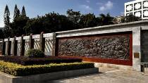
敬献花篮公祭仪式45min + 烈士纪念碑前重温入党誓词30min + 英烈事迹展厅参观60min + 现场微党课45min。
根据班次来源地，就近安排：龙岗烈士纪念碑、宝安革命烈士纪念碑、南头古城革命历史展等。
| 时间 | 活动内容 | 类型 | 时长 |
|---|---|---|---|
| 14:00-15:00 | 接站前往欣正智慧党建中心，办理入住 | 接站 | 60min |
| 15:00-15:30 | 入住休整 | 住宿 | 30min |
| 15:30-16:30 | 开班仪式 | 开班 | 60min |
| 16:30-18:00 | 导学课：《深圳英烈事迹综述——从革命战争到建设年代》 | 学习 | 90min |
| 18:00-19:00 | 基地晚餐 | 用餐 | 60min |
| 19:30-21:00 | 观看纪录片《山河铭记——深圳英烈传》 | 学习 | 90min |
| 时间 | 活动内容 | 类型 | 时长 |
|---|---|---|---|
| 07:00-07:30 | 起床 | — | 30min |
| 07:30-08:15 | 基地早餐 | 用餐 | 45min |
| 08:30-09:00 | 乘车前往深圳革命烈士陵园 | 交通 | 30min |
| 09:00-11:30 | 烈士陵园公祭仪式+重温誓词+展厅参观+微党课 | 缅怀+学习 | 150min |
| 12:00-13:00 | 附近午餐 | 用餐 | 60min |
| 13:30-15:00 | 前往辖区烈士纪念设施（龙岗/宝安/南山，按班次安排） | 交通+参观 | 90min |
| 15:30-17:00 | 现场教学：烈士家属/老兵访谈分享（如安排） | 学习 | 90min |
| 17:30-18:30 | 返回基地晚餐 | 用餐 | 60min |
| 19:30-21:00 | 烛光追思会：学员讲述心中的英烈故事 | 学习 | 90min |
| 时间 | 活动内容 | 类型 | 时长 |
|---|---|---|---|
| 07:30-08:15 | 早餐、退房 | 用餐 | 45min |
| 09:00-10:30 | 专题课：《从英烈精神看新时代党员的使命担当》 | 学习 | 90min |
| 10:30-11:30 | 学员撰写初心誓言、集体宣誓 | 学习 | 60min |
| 12:00-13:00 | 基地午餐 | 用餐 | 60min |
| 13:30-14:30 | 结业仪式、颁发证书 | 结业 | 60min |
| 15:00 | 送站返程 | 送站 | — |
研学主题：缅怀先烈、初心淬炼
学习重点：家国大义、无私奉献、红色精神代代传承
着装要求：请着深色上衣，保持肃穆。
前海石前合影20min + "改革开放再出发"现场课40min。
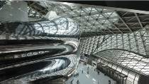
城市规划展参观60min + "深圳城市崛起密码"专题课60min。
高新企业党建展厅参观45min + 企业党员先锋座谈45min。
展厅参观90min + "科技自立自强"主题课60min。
| 时间 | 活动内容 | 类型 | 时长 |
|---|---|---|---|
| 14:00-15:00 | 接站前往欣正智慧党建中心，办理入住 | 接站 | 60min |
| 15:00-15:30 | 入住休整 | 住宿 | 30min |
| 15:30-16:30 | 开班仪式 | 开班 | 60min |
| 16:30-17:15 | 乘车前往前海石公园 | 交通 | 45min |
| 17:15-18:15 | 前海石公园现场教学 | 参观+学习 | 60min |
| 18:30-19:30 | 前海合作区晚餐 | 用餐 | 60min |
| 20:00-21:00 | 返回基地，晚间整理学习笔记 | 学习 | 60min |
| 时间 | 活动内容 | 类型 | 时长 |
|---|---|---|---|
| 07:00-07:30 | 起床 | — | 30min |
| 07:30-08:15 | 基地早餐 | 用餐 | 45min |
| 08:30-09:00 | 乘车前往当代艺术与城市规划馆 | 交通 | 30min |
| 09:00-11:00 | 城市规划馆：参观+专题课 | 参观+学习 | 120min |
| 11:15-12:15 | 前往南山科技园片区午餐 | 交通+用餐 | 60min |
| 13:30-15:00 | 南山科创园区党建展厅现场教学（参观+党员座谈） | 参观+学习 | 90min |
| 15:30-17:00 | 参访代表性科技企业展厅（如华为/腾讯周边展，按安排） | 参观 | 90min |
| 18:00-19:00 | 南山科技园晚餐 | 用餐 | 60min |
| 19:30-21:00 | 专题课：《党建引领科技创新——深圳样本》 | 学习 | 90min |
| 时间 | 活动内容 | 类型 | 时长 |
|---|---|---|---|
| 07:30-08:15 | 早餐、退房（行李集中） | 用餐 | 45min |
| 08:30-09:15 | 乘车前往深圳科技馆新馆 | 交通 | 45min |
| 09:15-11:45 | 科技馆新馆：展厅参观+主题课 | 参观+学习 | 150min |
| 12:00-13:00 | 基地午餐 | 用餐 | 60min |
| 13:30-14:30 | 结业仪式：学员谈"科创使命"、颁发证书 | 结业 | 60min |
| 15:00 | 送站返程 | 送站 | — |
研学主题：解码深圳改革开放成功样板，科技自立自强
学习重点：创新精神、时代使命、青年担当
当前，全党正全面推进党史学习教育常态化与数字中国建设。粤港澳大湾区作为中国特色社会主义先行示范区，其党建创新、基层治理与数字化赋能经验具有全国标杆意义。
具备目前大湾区最完整的培训物理载体，可一次性解决外地市"吃住行学"一体化需求：
搭载VR重走长征路、AR入党誓词、AI党建交互、大数据学员管理系统，将深圳改革开放史、基层治理案例（如福田"三治融合"、前海模式）转化为沉浸式课程，契合年轻党员与数字化时代学习习惯。
干部在中央党校内容授权的阵地受训，直接接触国家级党建理论与深圳"党建+科技+治理"前沿实践，有助于把"湾区经验"转化为"本地解法"，响应"向深圳学习"的区域协作趋势（如中山-深圳、博罗-福田干部共训模式）。
《党史学习教育工作条例》对党员集中培训有硬性时长考核。依托该基地一站式闭环，可高效完成年度培训指标，且深圳作为改革开放窗口，培训档案、证书含金量高，易受上级巡察与考核认可。